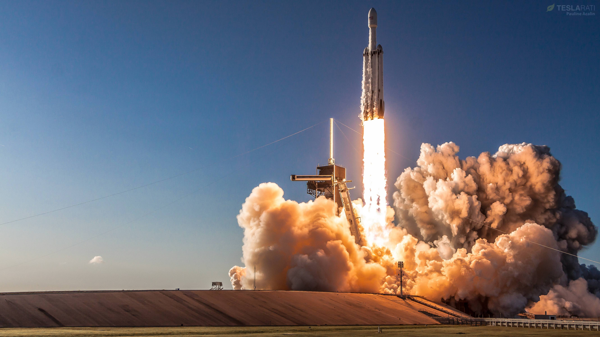

The Workhorse of Space: Falcon 9
The Falcon 9 is a partially reusable two-stage-to-orbit medium-lift launch vehicle designed and manufactured by SpaceX. It is powered by Merlin engines that burn liquid oxygen and rocket-grade kerosene. As the first orbital-class rocket capable of reflight, it has revolutionized the aerospace industry by drastically reducing launch costs. Today, it remains the most actively flown orbital launch vehicle in the world, regularly delivering satellites, cargo, and astronauts to space.
Key Milestones
- June 2010: The inaugural flight of the Falcon 9 rocket successfully reached orbit.
- December 2015: SpaceX achieved the first successful vertical landing of an orbital rocket booster.
- March 2017: The first successful reflight and landing of a previously flown first stage.
- May 2020: Falcon 9 launched the Crew Dragon spacecraft, sending NASA astronauts to the ISS.
Interesting Facts
- It stands exactly 70 meters (229.6 ft) tall and weighs nearly 550,000 kg at liftoff.
- The first stage utilizes nine Merlin engines arranged in an Octaweb configuration.
- Its fairings (the nose cone) are equipped with cold gas thrusters and a steerable parachute for recovery.
- The booster uses grid fins to steer itself during descent back through the Earth's atmosphere.

"You want to wake up in the morning and think the future is going to be great - and that’s what being a spacefaring civilization is all about."
— Elon Musk, CEO of SpaceX
Learn more on the official SpaceX Falcon 9 website.
Watch a historic Falcon 9 launch below: